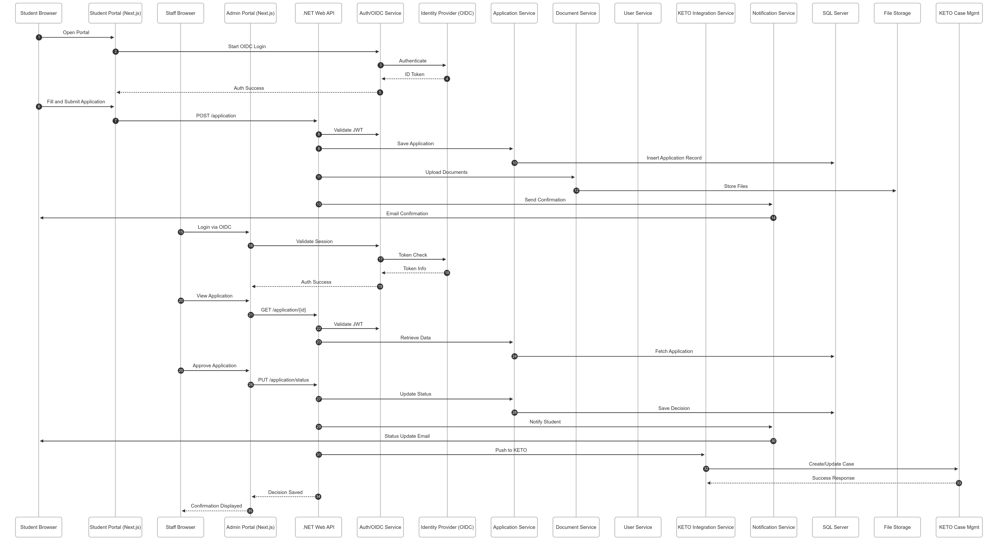
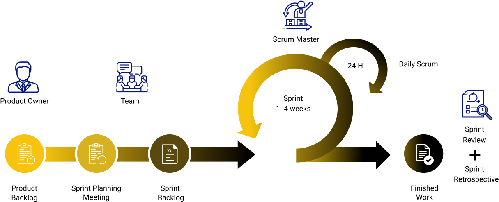

Proposed Solution
Online Student Application Platform for Rupertsland Institute
Table of Contents
- Executive Summary
- Solution Overview
- Technical Architecture
- Technology Stack
- Core Features and Functionality
- System Integration
- Security and Privacy
- User Experience Design
- Scalability and Performance
- Accessibility and Compliance
- Development Approach
- Testing Strategy
- Deployment and Infrastructure
- Training and Documentation
1. Executive Summary
Innoviware Solutions proposes a modern, secure and highly functional Online Student Application Platform that will streamline the funding application process for Métis students and enhance administrative efficiency for Rupertsland Institute staff. Our solution leverages cutting-edge technologies—.NET 8 for the backend API and Next.js 14 or Blazor for the frontend—to deliver a robust, scalable and user-friendly platform.
Our proposed platform will: - Provide an intuitive student-facing application portal - Streamline staff workflows with powerful administrative tools - Integrate seamlessly with existing KETO case management software - Ensure the highest levels of security and privacy compliance - Deliver a responsive, accessible experience across all devices - Scale to accommodate growing student populations
2. Solution Overview
2.1 High-Level Architecture
Our solution follows a modern three-tier architecture:
- Presentation Layer: Next.js 14 or Blazor frontend application providing the user interface
- Application Layer: .NET 8 Web API handling business logic and orchestration
- Data Layer: Microsoft SQL Server 2022 for secure data storage and management
This architecture ensures:
- Clear separation of concerns
- Enhanced security through API-based access
- Flexibility for future enhancements
- Optimal performance and scalability
- Maintainability by Rupertsland's in-house team
2.2 System Components
The platform consists of four primary modules:
- Student Portal - Self-service application interface for Métis students
- Administrative Portal - Staff dashboard for application management and review
- Integration Layer - API services connecting to KETO and other systems
- Reporting & Analytics - Dashboards and reports for data-driven decision making
3. Technical Architecture
3.1 Architecture Diagram

3.2 Architecture Benefits
- Scalability: Microservices-oriented design allows horizontal scaling of individual components
- Security: Multi-layered security with API gateway, authentication, and authorization
- Maintainability: Clear separation enables independent updates and maintenance
- Performance: Optimized data flow and caching strategies
- Flexibility: Easy to extend with new features and integrations
- Reliability: Redundancy and failover capabilities
3.3 Sequence Diagram

4. Technology Stack
4.1 Frontend Technologies
Primary Framework Options: Next.js 14 or Blazor
Option A: Next.js 14
Next.js provides an optimal foundation for the user interface with:
- Server-Side Rendering (SSR): Improved performance and SEO
- Static Site Generation (SSG): Fast page loads for static content
- API Routes: Built-in API capabilities for frontend needs
- Automatic Code Splitting: Optimized bundle sizes
- TypeScript Support: Type-safe development
- Built-in Optimization: Image optimization, font optimization
Supporting Technologies (Next.js stack):
- React 18: UI component library
- TypeScript: Type-safe JavaScript
- Tailwind CSS: Utility-first CSS framework for responsive design
- React Hook Form: Efficient form handling and validation
- Zod: Schema validation for form inputs
- TanStack Query (React Query): Data fetching and caching
- Axios: HTTP client for API communication
- NextAuth.js: Authentication for Next.js with OIDC support
- Chart.js / Recharts: Data visualization for dashboards
- React PDF: PDF document generation and viewing
- date-fns: Date manipulation and formatting
Option B: Blazor (WebAssembly or Server)
Blazor offers a C#/.NET-driven approach to building rich web UIs:
- C# Full-Stack: Shared models and logic across client and server
- Hosting Models: Blazor WebAssembly (client-side) or Blazor Server (SignalR-based)
- Pre-rendering & SSR Support: Improved perceived load and SEO (with ASP.NET Core)
- Component Model: Reusable Razor components with routing and layouts
- Strong .NET Ecosystem: Seamless integration with ASP.NET Core APIs, EF Core, and tooling
Supporting Technologies (Blazor stack):
- .NET 8+: Modern runtime and SDK
- Razor Components: UI composition with C#
- Styling: Tailwind CSS or Bootstrap (via community templates)
- Forms & Validation: DataAnnotations or FluentValidation
- State & Data:
HttpClient, Refit (typed REST), MediatR (patterns) - Auth: ASP.NET Core Identity, OpenID Connect (e.g., Duende, Azure AD / MSAL)
- Charts: ChartJs.Blazor, MudBlazor components
- PDF: QuestPDF, IronPDF, or viewer components (e.g., Syncfusion)
- Dates: NodaTime for robust date/time handling
4.2 Backend Technologies
Primary Framework: .NET 8
.NET 8 provides enterprise-grade reliability with:
- ASP.NET Core Web API: RESTful API development
- Entity Framework Core 8: Object-relational mapping (ORM)
- Built-in Dependency Injection: Clean architecture patterns
- Performance Optimization: Native AOT compilation support
- Cross-Platform: Runs efficiently on Windows/Linux
- Long-Term Support (LTS): Stable, supported platform
Supporting Technologies:
- C# 12: Modern, type-safe programming language
- ASP.NET Core Identity: User authentication and authorization
- IdentityServer / Duende IdentityServer: OIDC/OAUTH2 implementation
- FluentValidation: Model validation
- AutoMapper: Object-to-object mapping
- Serilog: Structured logging
- Hangfire: Background job processing
- MediatR: CQRS pattern implementation
- Polly: Resilience and transient-fault handling
- Swashbuckle (Swagger): API documentation
- SignalR: Real-time notifications (optional)
4.3 Database & Storage
- Microsoft SQL Server 2022: Primary relational database
- Entity Framework Core 8: Database access and migrations
- File System Storage: Secure document storage with encryption
- Azure Blob Storage (Optional): Cloud-based document storage alternative
4.4 Security Technologies
- OIDC (OpenID Connect): Authentication protocol
- OAUTH2: Authorization framework
- JWT (JSON Web Tokens): Secure token-based authentication
- AES-256 Encryption: Data encryption at rest
- TLS 1.3: Data encryption in transit
- OWASP Security Practices: Comprehensive security measures
- Multi-Factor Authentication (MFA): Enhanced account security
4.5 DevOps & Deployment
- Git: Version control
- GitHub/Azure DevOps: Source code repository and CI/CD
- Docker: Containerization (optional)
- IIS 10: Web server hosting
- Windows Server 2022: Server operating system
- SQL Server Management Studio: Database management
- Application Insights: Performance monitoring and diagnostics
5. Core Features and Functionality
5.1 Student Portal Features
5.1.1 User Registration & Authentication
Features:
- Self-registration with email verification
- Multi-factor authentication (MFA) using Rupertsland Identity Server
- Password strength requirements and secure reset process
- "Remember Me" functionality with secure token management
- Account lockout protection after failed login attempts
Technical Implementation:
- Next.js frontend with NextAuth.js for authentication flow
- .NET 8 API integration with Rupertsland OIDC identity provider
- Secure session management with encrypted cookies
- Token refresh mechanism for seamless user experience
5.1.2 Student Profile Management
Features:
-
Personal Information:
- Full legal name
- Date of birth
- Contact details (email, phone, mailing address)
- Social Insurance Number (encrypted storage)
- Métis citizenship number
-
Document Upload:
- Government-issued photo ID (driver's license, passport)
- Métis citizenship card
- Supporting documents
- Drag-and-drop file upload interface
- File type validation (PDF, JPG, PNG)
- File size limits with client-side validation
- Automatic virus scanning
-
Profile Editing:
- Edit personal information
- Update contact details
- Replace uploaded documents
- View document upload history
Technical Implementation:
- React Hook Form for efficient form handling
- Zod schema validation for data integrity
- Chunked file upload for large documents
- Secure file storage with encryption at rest
- Document versioning and audit trail
5.1.3 Academic Information Entry
Features:
- Institution selection (dropdown with search)
- Program/course of study
- Year of study (1st, 2nd, 3rd, 4th, graduate)
- Full-time/part-time status
- Expected completion date
- Previous education history
- Academic standing
Technical Implementation:
- Dynamic form fields based on institution type
- Institution database with auto-complete search
- Validation of program codes and credentials
- Integration with educational institutions (future phase)
5.1.4 Funding Application Submission
Features:
-
Multi-step application wizard:
- Personal Information Review
- Academic Information
- Financial Information
- Document Upload
- Application Review & Submit
-
Application Types:
- Post-secondary tuition funding
- Living allowance
- Books and supplies
- Travel support
- Special needs support
-
Progress Saving:
- Auto-save functionality
- Save draft and return later
- Progress indicator showing completion status
-
Document Requirements Checklist:
- Confirmation of enrollment
- Tuition invoice/receipt
- Course schedule
- Additional supporting documents
Technical Implementation:
- Multi-step form with state management
- Client-side validation before submission
- Server-side validation for security
- Atomic transaction handling
- Application number generation
- Email confirmation upon submission
5.1.5 Application Status Tracking
Features:
-
Dashboard showing all applications:
- Current status (Submitted, Under Review, Approved, Declined, Pending Documents)
- Submission date
- Application number
- Funding type and amount requested
-
Status Timeline:
- Visual timeline showing application progress
- Timestamps for each status change
- Staff notes (when applicable)
-
Notifications:
- Email notifications for status changes
- In-app notification center
- Push notifications (optional mobile feature)
-
Document Requests:
- View requested additional documents
- Upload requested documents directly
- Track document submission
Technical Implementation:
- Real-time status updates via API polling or SignalR
- TanStack Query for efficient data caching
- Email notification service
- Status change audit logging
5.1.6 Document Center
Features:
- View all uploaded documents
- Download previously submitted documents
- Upload additional supporting documents
- Document expiry tracking (for IDs)
- Document status (Pending Review, Verified, Rejected)
Technical Implementation:
- Secure document retrieval with authorization checks
- PDF viewer component
- Document thumbnails for images
- Secure download with token-based access
5.1.7 Communication Portal
Features:
- Message center for staff communication
- View announcements and updates
- Submit inquiries to support staff
- Receive automated notifications
Technical Implementation:
- Message threading and history
- Notification delivery system
- Rich text editor for messages
5.2 Administrative Portal Features
5.2.1 Application Management Dashboard
Features:
-
Overview Dashboard:
- Total applications (by status)
- Applications requiring action
- Pending reviews
- Recent submissions
- Key metrics and KPIs
-
Application Queue:
- Sortable list of all applications
- Filter by status, date, funding type
- Search by student name, application number
- Batch operations support
- Priority flagging system
-
Application Details View:
- Complete application information
- Student profile and history
- All uploaded documents
- Previous applications by student
- Internal notes and comments
- Activity timeline
Technical Implementation:
- Server-side pagination for large datasets
- Advanced filtering with SQL query optimization
- Real-time updates for collaborative review
- Role-based data access controls
5.2.2 Application Review & Processing
Features:
-
Document Verification:
- Side-by-side document viewer
- Zoom and annotation tools
- Document approval/rejection with reasons
- Request additional documents
-
Application Assessment:
- Eligibility checklist
- Funding calculation tools
- Internal assessment notes
- Recommendation workflow
-
Decision Actions:
- Approve with funding amount
- Decline with reason
- Request more information
- Place on hold with notes
-
Approval Workflow:
- Multi-level approval routing
- Digital signature capture (if required)
- Automated email notifications to students
-
Batch Processing:
- Approve multiple applications
- Export applications for financial processing
- Bulk status updates
Technical Implementation:
- Workflow engine for approval routing
- Document comparison tools
- Calculation engine for funding amounts
- Audit trail for all decisions
- Transaction management for data consistency
5.2.3 Student Account Management
Features:
- Search and view student profiles
- Edit student information (with authorization)
- View complete application history
- Add internal notes
- Flag accounts for review
- Unlock locked accounts
- Reset passwords
- Manage MFA settings
Technical Implementation:
- Advanced search with indexing
- Change tracking and audit logs
- Role-based editing permissions
- Secure data modification procedures
5.2.4 Document Management System
Features:
- Centralized document repository
- Document verification status tracking
- Bulk document download
- Document categorization and tagging
- Archive old documents
- Document retention policy enforcement
- Export documents to external systems
Technical Implementation:
- Indexed document storage
- Full-text search capabilities
- Secure file handling with virus scanning
- Automated archival processes
5.2.5 Reporting & Analytics Dashboard
Features:
-
Pre-built Reports:
- Application volume by period
- Funding disbursement summary
- Application processing times
- Approval/decline rates
- Demographics breakdown
- Institution distribution
- Program type analysis
-
Custom Report Builder:
- Select data fields
- Apply filters and date ranges
- Choose visualization types
- Save report templates
-
Data Visualization:
- Interactive charts and graphs
- Trend analysis
- Comparative analytics
- Geographic mapping (future phase)
-
Export Capabilities:
- PDF export
- Excel export
- CSV export
- Scheduled report delivery
Technical Implementation:
- Optimized database queries with indexing
- Report caching for performance
- Chart.js/Recharts for visualizations
- Background job processing for large reports
- Parameterized reports for flexibility
5.2.6 Financial Tracking & Commitments
Features:
-
Budget Monitoring:
- Total budget vs. committed funds
- Available funding by category
- Fiscal year tracking
- Budget alerts and warnings
-
Commitment Tracking:
- Committed vs. disbursed amounts
- Payment status tracking
- Outstanding commitments
- Reconciliation tools
-
Payment Management:
- Mark payments as issued
- Track payment methods
- Payment history by student
- Export payment data for accounting systems
Technical Implementation:
- Financial calculation engine
- Real-time budget calculations
- Integration with accounting systems
- Financial audit trails
- Data validation for financial accuracy
5.2.7 User & Role Management
Features:
- Staff user management
-
Role-based access control (RBAC):
- Administrator
- Application Reviewer
- Financial Officer
- Read-Only Viewer
- Custom roles
-
Permission Management:
- Granular permissions by module
- Data access restrictions
- Feature-level permissions
-
Activity Monitoring:
- User activity logs
- Login history
- Security event tracking
Technical Implementation:
- Claims-based authorization in .NET
- Permission caching for performance
- Secure session management
- Comprehensive audit logging
5.2.8 System Configuration
Features:
- Application settings management
- Email template configuration
- Notification preferences
- System maintenance mode
- Data retention policies
- Integration settings
- API key management
Technical Implementation:
- Configuration service with caching
- Secure storage of sensitive settings
- Version control for configuration changes
- Role-restricted access to settings
5.3 Common Features (Both Portals)
5.3.1 Help & Support
Features:
- Contextual help tooltips
- FAQ section
- Video tutorials
- Contact support form
- User guides and documentation
- Chat support integration (future phase)
Technical Implementation:
- Dynamic help content management
- Video hosting and streaming
- Support ticket creation
- Knowledge base search
5.3.2 Notifications System
Features:
- Email notifications
- In-app notifications
- SMS notifications (optional)
- Notification preferences
- Notification history
Technical Implementation:
- Background job processing with Hangfire
- Email service with templating
- SMS gateway integration (Twilio/similar)
- Notification queue management
6. System Integration
6.1 KETO Case Management Integration
Integration Approach:
Our solution will provide seamless bi-directional integration with the existing KETO case management system through a dedicated Integration Layer built with .NET 8.
Integration Features:
-
Data Synchronization:
- Student demographic information
- Application data and status
- Document references
- Funding decisions and amounts
- Payment information
-
Real-Time Updates:
- Push application data to KETO upon submission
- Pull student information from KETO for validation
- Sync status changes in both systems
-
Automated Workflows:
- Trigger KETO workflows from application events
- Receive KETO case updates and reflect in application system
- Automated case creation in KETO for new applications
Technical Implementation:
- Integration Pattern: RESTful API or SOAP web services (based on KETO capabilities)
- Authentication: OAUTH2 service-to-service authentication
- Data Mapping: AutoMapper for object transformation
- Error Handling: Retry logic with exponential backoff (Polly library)
- Data Validation: Schema validation before data transfer
- Logging: Comprehensive integration logging for troubleshooting
- Monitoring: Real-time integration health monitoring
- Fallback: Queue-based integration for offline scenarios
Integration Architecture:

6.2 Identity Server Integration
Integration with Rupertsland Identity Authentication Server:
- Protocol: OpenID Connect (OIDC)
- Authorization: OAUTH2
-
Implementation:
- NextAuth.js on frontend for OIDC flow
- .NET 8 Identity integration for API authentication
- JWT token validation middleware
-
Features:
- Single Sign-On (SSO) capability
- Multi-factor authentication (MFA)
- Session management
- Token refresh handling
- Secure logout
6.3 Email Service Integration
Email Notification System:
- Automated transactional emails
- Template-based email generation
- Email delivery tracking
- Bounce and complaint handling
Technical Implementation:
- SMTP server configuration
- Alternative: SendGrid/AWS SES for cloud-based delivery
- Email queuing for reliability
- HTML email templates with Razor
6.4 Document Storage Integration
Secure File Storage:
- Local file system with encryption
- Organized folder structure by student/application
- Document metadata in database
- Virus scanning on upload
- Backup and retention policies
Alternative Cloud Storage:
- Azure Blob Storage integration (optional)
- AWS S3 integration (optional)
- Enhanced redundancy and availability
7. Security and Privacy
7.1 Authentication & Authorization
Multi-Factor Authentication (MFA):
- Integration with Rupertsland Identity Server
- Support for authenticator apps (Google Authenticator, Microsoft Authenticator)
- SMS-based verification (optional)
- Email verification codes
- Backup codes for account recovery
Authorization Model:
- Role-Based Access Control (RBAC)
- Claims-based authorization
- Resource-level permissions
- Principle of least privilege
- Regular access reviews
7.2 Data Encryption
Encryption at Rest:
- Database encryption using SQL Server TDE (Transparent Data Encryption)
- File system encryption for documents
- AES-256 encryption for sensitive fields (SIN, etc.)
- Encrypted backups
Encryption in Transit:
- TLS 1.3 for all communications
- HTTPS enforcement
- Certificate pinning for API clients
- Secure WebSocket connections (if using SignalR)
7.3 Privacy Compliance
FOIP (Freedom of Information and Protection of Privacy Act):
- Collection limitation
- Purpose specification
- Use limitation
- Consent management
- Access and correction rights
- Data retention and disposal
PIPEDA (Personal Information Protection and Electronic Documents Act):
- Accountability
- Identifying purposes
- Consent
- Limiting collection
- Limiting use, disclosure, and retention
- Accuracy
- Safeguards
- Openness
- Individual access
- Challenging compliance
Implementation:
- Privacy policy and terms of service
- Consent tracking and management
- Data access logs and audit trails
- Right to access personal information
- Right to correction
- Right to erasure (where applicable)
- Data breach notification procedures
- Privacy impact assessment documentation
7.4 Application Security
OWASP Top 10 Protection:
-
Injection Prevention:
- Parameterized queries (Entity Framework)
- Input validation and sanitization
- Output encoding
-
Broken Authentication:
- Secure session management
- Strong password policies
- Account lockout mechanisms
- MFA implementation
-
Sensitive Data Exposure:
- Data encryption
- Secure key management
- HTTPS enforcement
-
XML External Entities (XXE):
- Disable XML external entity processing
- Input validation
-
Broken Access Control:
- Enforce authorization checks
- Deny by default
- Rate limiting
-
Security Misconfiguration:
- Secure default configurations
- Regular security updates
- Disable unnecessary features
-
Cross-Site Scripting (XSS):
- React's built-in XSS protection
- Content Security Policy (CSP)
- Input sanitization
-
Insecure Deserialization:
- Validate deserialized objects
- Integrity checks
-
Using Components with Known Vulnerabilities:
- Regular dependency updates
- Automated vulnerability scanning
- Security advisory monitoring
-
Insufficient Logging & Monitoring:
- Comprehensive logging (Serilog)
- Security event monitoring
- Alerting for suspicious activities
7.5 Security Testing
Security Measures:
- Static Application Security Testing (SAST)
- Dynamic Application Security Testing (DAST)
- Dependency vulnerability scanning
- Penetration testing
- Security code reviews
- Compliance audits
7.6 Data Backup & Recovery
Backup Strategy:
- Automated daily database backups
- Document storage backups
- Retention period: 7 years (configurable)
- Encrypted backup storage
- Regular restore testing
- Disaster recovery plan
Business Continuity:
- Recovery Time Objective (RTO): < 4 hours
- Recovery Point Objective (RPO): < 24 hours
- Documented recovery procedures
- Failover capabilities
8. User Experience Design
8.1 Design Principles
User-Centered Design:
- Intuitive navigation
- Clear visual hierarchy
- Consistent design language
- Reduced cognitive load
- Progressive disclosure
- Error prevention and recovery
Accessibility First:
- WCAG 2.1 AA compliance
- Keyboard navigation
- Screen reader compatibility
- High contrast mode
- Adjustable font sizes
- Alternative text for images
Mobile-First Responsive Design:
- Optimized for all screen sizes
- Touch-friendly interfaces
- Efficient mobile workflows
- Progressive Web App (PWA) capabilities
8.2 User Interface Features
Student Portal UI:
- Clean, modern dashboard
- Guided application wizard
- Progress indicators
- Contextual help
- Clear calls-to-action
- Friendly error messages
- Success confirmations
Administrative Portal UI:
- Information-dense dashboard
- Data tables with sorting/filtering
- Quick actions and shortcuts
- Bulk operations
- Detailed reports and analytics
- Customizable workspace
8.3 Usability Testing
Testing Approach:
- User acceptance testing with actual students and staff
- Usability testing sessions
- A/B testing for key workflows
- Accessibility testing with assistive technologies
- Performance testing on various devices
- Feedback collection and iteration
9. Scalability and Performance
9.1 Scalability Architecture
Horizontal Scalability:
- Stateless API design for easy scaling
- Load balancing support
- Database connection pooling
- Distributed caching (Redis - optional)
- Session state management
Database Optimization:
- Proper indexing strategy
- Query optimization
- Database partitioning (future)
- Read replicas for reporting (optional)
Caching Strategy:
- Client-side caching with TanStack Query
- API response caching
- Static asset caching with CDN
- Database query caching
9.2 Performance Targets
Response Times:
- Page load time: < 2 seconds
- API response time: < 500ms (95th percentile)
- Database query time: < 100ms (average)
- Document upload: Chunked upload for large files
Capacity Planning:
- Support 10,000+ concurrent users
- Process 50,000+ applications per year
- Handle 500GB+ of document storage
- Scale to accommodate 50% annual growth
Performance Monitoring:
- Application Performance Monitoring (APM)
- Real-time performance dashboards
- Automated performance alerts
- Regular performance audits
10. Accessibility and Compliance
10.1 WCAG 2.1 AA Compliance
Perceivable:
- Text alternatives for non-text content
- Captions and alternatives for multimedia
- Adaptable content presentation
- Distinguishable foreground and background
Operable:
- Keyboard accessible functionality
- Sufficient time for user actions
- Seizure-safe design (no flashing)
- Navigable and findable content
Understandable:
- Readable and understandable text
- Predictable functionality
- Input assistance and error identification
Robust:
- Compatible with assistive technologies
- Valid HTML and ARIA markup
- Browser and device compatibility
10.2 Accessibility Features
Technical Implementation:
- Semantic HTML5 markup
- ARIA labels and roles
- Skip navigation links
- Focus indicators
- Accessible forms with proper labels
- Error identification and suggestions
- Status messages for screen readers
- Keyboard shortcuts
- Alternative text for all images
- Accessible data tables
- Accessible PDF generation
10.3 Compliance Documentation
Deliverables:
- VPAT (Voluntary Product Accessibility Template)
- Accessibility conformance report
- User testing with assistive technologies
- Ongoing accessibility audits
11. Development Approach
11.1 Agile Methodology
 Sprint Structure:
- 2-week sprints
- Sprint planning sessions
- Daily stand-ups (remote/in-person)
- Sprint reviews and demos
- Sprint retrospectives
- Continuous feedback integration
Collaboration Tools:
- Azure DevOps / Jira for project management
- Slack / Teams for communication
- Confluence / SharePoint for documentation
- GitHub for version control
11.2 Development Phases
Phase 1: Foundation (Weeks 1-4)
- Requirements finalization
- Technical architecture setup
- Development environment configuration
- Database schema design
- Authentication integration
- Basic UI framework
- CI/CD pipeline setup
Phase 2: Core Student Features (Weeks 5-10)
- Student registration and login
- Profile management
- Application submission workflow
- Document upload functionality
- Application status tracking
- Email notifications
- Testing and refinement
Phase 3: Administrative Portal (Weeks 11-16)
- Admin dashboard
- Application review workflows
- Document verification tools
- User management
- Basic reporting
- Staff training preparation
- Testing and refinement
Phase 4: Integration & Advanced Features (Weeks 17-22)
- KETO system integration
- Advanced reporting and analytics
- Financial tracking
- Bulk operations
- Performance optimization
- Security hardening
- Integration testing
Phase 5: Testing & Deployment (Weeks 23-28)
- User acceptance testing
- Accessibility testing
- Security testing
- Performance testing
- Bug fixes and refinements
- Documentation completion
- Staff training
- Data migration (if applicable)
- Deployment to production
- Post-launch support
11.3 Quality Assurance
Testing Strategy:
- Unit testing (80%+ code coverage)
- Integration testing
- End-to-end testing
- Regression testing
- Performance testing
- Security testing
- Accessibility testing
- User acceptance testing
Tools & Frameworks:
- Backend: xUnit, NUnit for .NET testing
- Frontend: Jest, React Testing Library
- E2E: Playwright or Cypress
- Load Testing: k6 or JMeter
- Security: OWASP ZAP, SonarQube
12. Testing Strategy
12.1 Testing Levels
Unit Testing:
- Individual component testing
- Business logic validation
- 80%+ code coverage target
- Automated test execution in CI/CD
Integration Testing:
- API endpoint testing
- Database integration testing
- External service integration testing
- Authentication flow testing
End-to-End Testing:
- Complete user workflow testing
- Critical path testing
- Cross-browser testing
- Mobile device testing
Performance Testing:
- Load testing with realistic user volumes
- Stress testing to identify limits
- Spike testing for traffic surges
- Endurance testing for stability
Security Testing:
- Vulnerability scanning
- Penetration testing
- Authentication and authorization testing
- Data encryption verification
Accessibility Testing:
- Automated accessibility scanning
- Manual testing with screen readers
- Keyboard navigation testing
- Color contrast verification
User Acceptance Testing:
- Testing with actual Métis students
- Testing with administrative staff
- Feedback collection and iteration
- Sign-off on acceptance criteria
12.2 Test Automation
CI/CD Pipeline:
- Automated builds on code commit
- Automated unit and integration tests
- Code quality and security scanning
- Automated deployment to staging
- Manual approval for production deployment
Continuous Monitoring:
- Automated performance monitoring
- Error tracking and alerting
- User behavior analytics
- Security event monitoring
13. Deployment and Infrastructure
13.1 Hosting Architecture
Infrastructure Components:
-
Web Server:
- Microsoft IIS 10 on Windows Server 2022
- Multiple application pools for isolation
- SSL/TLS certificate management
- URL rewriting and optimization
-
Application Server:
- .NET 8 runtime
- Hosted as Windows Service or IIS application
- Application pool recycling and health monitoring
-
Database Server:
- Microsoft SQL Server 2022
- Database maintenance plans
- Automated backups
- Query performance monitoring
-
File Storage:
- Windows file system with encryption
- Organized folder structure
- Regular backups to secondary storage
- Virus scanning integration
13.2 Deployment Strategy
Blue-Green Deployment:
- Zero-downtime deployments
- Quick rollback capability
- Reduced deployment risk
Deployment Process:
- Code review and approval
- Automated testing in CI/CD
- Deployment to staging environment
- Staging validation and testing
- Scheduled production deployment
- Post-deployment verification
- Monitoring and support
13.3 Environment Configuration
Development Environment:
- Local development setup
- Docker containers (optional)
- Mock integrations for testing
Staging Environment:
- Mirror of production configuration
- Test data and scenarios
- Integration testing with KETO test environment
Production Environment:
- High-availability configuration
- Production data and security
- Full integration with KETO production
- Monitoring and alerting
13.4 Source Code Management
Version Control:
- Git repository (GitHub or Azure Repos)
- Branch strategy: GitFlow or GitHub Flow
- Pull request reviews
- Automated code quality checks
Code Ownership:
- Complete source code provided to Rupertsland
- Comprehensive code documentation
- Architecture documentation
- Deployment runbooks
Knowledge Transfer:
- Code walkthrough sessions
- Developer documentation
- Architecture decision records (ADRs)
- Ongoing support for in-house team
14. Training and Documentation
14.1 User Training
Student Portal Training:
- Video tutorials for key workflows
- Interactive user guide
- FAQ section
- Email support resources
- Live webinar sessions (optional)
Administrative Portal Training:
- Comprehensive staff training sessions (in-person or remote)
- Role-specific training modules:
- Application reviewers
- Financial officers
- System administrators
- Hands-on practice in staging environment
- Quick reference guides
- Training recordings for future staff
14.2 Documentation Deliverables
Technical Documentation:
- System architecture documentation
- API documentation (Swagger/OpenAPI)
- Database schema documentation
- Integration specifications
- Security and compliance documentation
- Disaster recovery procedures
User Documentation:
- Student user guide
- Administrator user guide
- FAQ and troubleshooting guide
- Video tutorial library
- Help center content
Operations Documentation:
- Deployment guide
- Configuration management guide
- Backup and recovery procedures
- Monitoring and maintenance guide
- Incident response procedures
14.3 Support & Maintenance
Warranty Period (90 Days Post-Launch):
- Bug fixes at no additional cost
- Technical support via email and phone
- Performance optimization
- Minor enhancements as needed
Ongoing Support Options:
- Monthly support and maintenance retainer
- On-demand support hours
- Feature enhancement projects
- Performance tuning
- Security updates and patches
Support Levels:
- Critical: Response within 1 hour, 24/7
- High: Response within 2 hours, business hours
- Medium: Response within 1 business day
- Low: Response within 3 business days
15. Conclusion
Innoviware Solutions' proposed solution delivers a modern, secure, and scalable Online Student Application Platform that will transform how Rupertsland Institute serves Métis students across Alberta. By leveraging Next.js 14 or Blazor for an exceptional user experience and .NET 8 for robust backend services, we provide a future-proof foundation that can grow with Rupertsland's needs.
Key Solution Highlights:
Modern Technology Stack: Next.js 14 or Blazor and .NET 8 provide cutting-edge performance and developer experience
Seamless Integration: Full integration with KETO and Rupertsland Identity Server
Security & Privacy: Multi-layered security with FOIP and PIPEDA compliance
User-Friendly: Intuitive interfaces for both students and staff
Scalable Architecture: Built to handle growing application volumes
Accessible: WCAG 2.1 AA compliant for inclusive access
Comprehensive Features: All required functionality plus advanced reporting and analytics
Full Source Code: Complete ownership and control for Rupertsland
We are confident that our solution, combined with our collaborative approach and commitment to Indigenous partnership, makes Innoviware Solutions the ideal partner for this important project.
For inquiries regarding this proposal, please contact:
Rahul Bains
Project Lead
Email: rahul@innoviwaresolutions.com